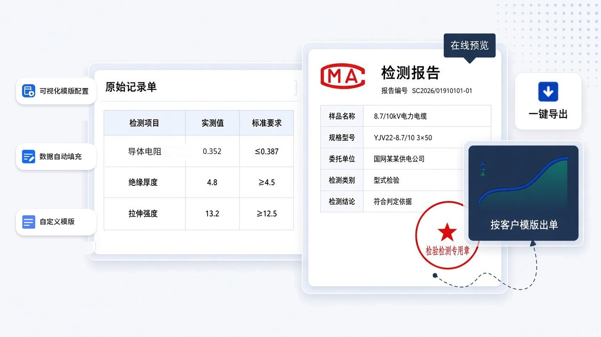

01
信息孤岛，数据断层
仪器已是数显，很多厂仍人工读数、
填写纸质原始记录。
纸质记录难查，容易涂改、丢失，
对不上 ISO/IEC 17025 对数据原始性的要求。
实验室和生产不通：线已经在挤塑，
检验申请还在路上。
结果出来还要手工录入 ERP 才能出库。
 数蚕 LIMS
数蚕 LIMS
遵循 CNAS、CMA 等体系标准要求，整合实验室设备、检测方法标准、质量管理等“人、机、料、法、环”全要素的数据信息，实现实验室全方位数字信息综合分析管理。
信息孤岛、重复抄录、数据防篡改、设备、人才和反馈速度。
标准、直采、模版、追溯、认证对应、大屏、开放API、PC+移动、实施与售后。
流程、采集、报告、模版、审计追踪、设备、权限、流程自定义。
少差错、提效率、数据能用、交付可查。

02 · 软件优势
电缆种类繁多（电力电缆、通信电缆、特种电缆等），适用的标准（如 GB/T、IEC、UL 等）及客户企标极为复杂。
系统内置并方便地维护各种国家标准、行业标准和企业标准。
检验数据录入后，系统自动与标准比对，判定合格或不合格。
导体电阻温度换算、绝缘厚度平均值、拉伸强度截面积等，由自定义公式计算，减少人工算错。

录入后按标准自动比对，复杂公式由系统计算。
仪器测试数据直接抓进系统，避免人工誊写。直采同时杜绝手改，原始记录真实、可追溯。
直接抓取仪器测试数据，避免人工誊写。老旧设备可改造直采，串口、图像识别和智能采集节点都能接。
很多招标项目对质量数据的真实性要求极高。数据直采杜绝人工修改数据，确保原始记录真实、可追溯。
结果回传后直接进入判定和出单，不另存一份可以再改的本地账。

仪器数据直接进系统。直采杜绝人工修改，原始记录可追溯。
交付时按客户自己的模版，配好检测范围内的原始记录单和报告。之后客户自己改，不用再找我们。
交付时按客户现用的记录单和报告，配好其检测能力范围内的模版。上线就按这套出单。
字段或版式要调，客户在页面上自己改。改完，后面的记录单和报告按新模版生成。
提供可视化配置，并手把手培训怎么改。学会之后，日常修改由客户自己完成。

按客户模版交付记录单和报告，之后客户自己改。
用批次号或条码，把这批电缆的原料、设备、人员和检测环境对上。样品从抽样到废样，全程条码跟踪。
通过批次号或条码，追溯到该批电缆用了哪一批铜杆、哪一批绝缘料，由哪台设备、哪位检验员，在什么环境温度下检测。
从生产线抽样、送样、接样、留样到废样处理，全流程条码化跟踪。

批次号或条码可追到原料、设备、人员和温度。
打破信息孤岛。可按客户现有系统做接口对接定制。
SAP、用友、金蝶。原料入库前，LIMS 接收检验申请；检验完成后，合格放行回传 ERP，才能入库或发货。
首检、巡检实时交互。挤塑、绞线出现质量异常，立刻通知 MES 停机或调整，避免批量报废。
ERP
入库前，把检验申请传给 LIMS。
ERP
没有放行指令，不能入库或发货。
MES
首检、巡检和 LIMS 来回交互。
MES
通知停机或调整，避免整批报废。
其他系统可以按项目做接口对接。
办公室用电脑网页，车间用两部手机。任务、检测和报告在同一套系统里协同。
委托、审核、报告和模版配置在办公室完成。
从应用中心进入，快速登记。报告在手机上查看和下载。
今日任务、按任务检测，现场确认并上传。

电脑网页、LIMS App、数据采集 App，同一套任务。
03 · 功能模块
委托、收样、分配、检测、审核、签发，全流程线上流转，责任到人。
系统生成唯一编号。委托信息、检测项目、判定标准一次录完。
谁做哪一项、做到哪一步，在任务上能对上人。逾期自动提醒。
制备、发样、试验、审核和报告都在系统里走，不用拼表，也不用把过程文件传来传去。

委托登记与任务流转示意
检验数据对照标准自动判定后，一键生成符合格式的 PDF 或纸质报告，并支持电子签章。
每个试验参数按绑定标准给出合格或不合格。不合格标出，不能当作合格报告发出。
一键生成符合客户格式的 PDF，也可以出纸质报告。数据取自原始记录，不另抄一份。
审核、签发在线上完成。签章留在报告上，能对到具体的人。

自动判定后生成 PDF 或纸质报告，并支持电子签章。
管理员按实际业务取消不需要的环节，并调整顺序。
不需要的环节可以取消，流程按实验室实际来收。
拖拽调整流程顺序，勾选启用或停用。
不同检测活动不必共用同一条流程，用来去掉冗余、把效率提上来。

流程可按实验室配置：拖拽排序，勾选启用或停用。